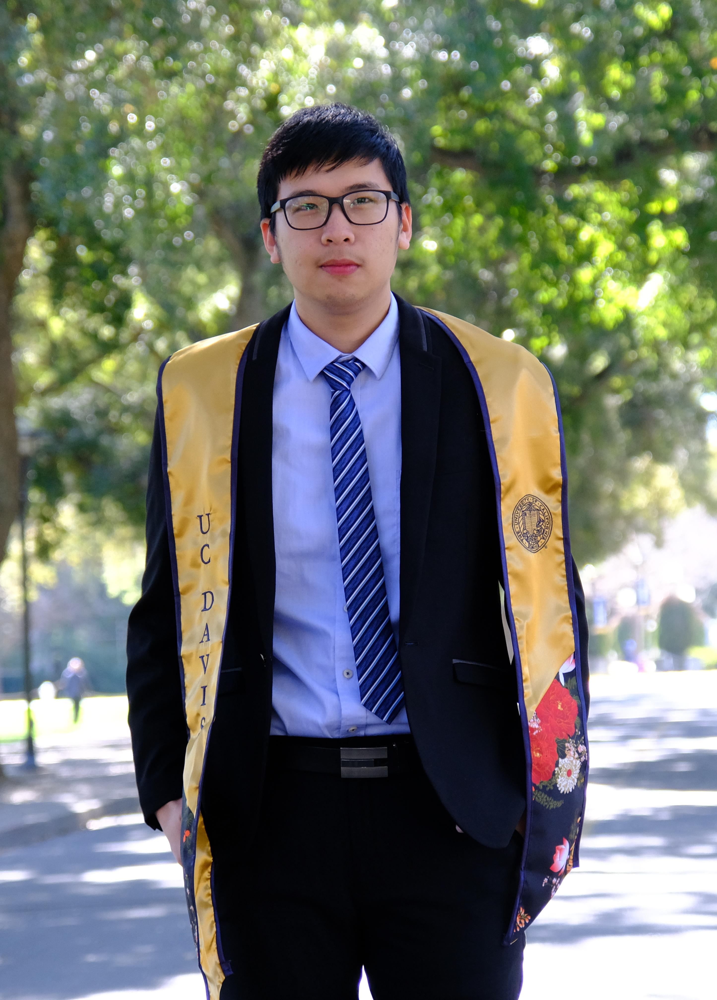

ABOUT ME
Home | Education | Experience | CV | Contact
 My name is Yu-Cheng Deng 鄧宇成. I'm a master's student in Electrical and Computer Engineering at the University of California, Davis. I'm currently a graduate student in Marcu Lab from Biomedical Engineering Department at the University of California, Davis. My research project includes fluorescent lifetime imaging (FLIm) Data Visualization, Graphical User Interface (GUI) for FLIm map generation, and Real-Time approach for FLIm data. My research interets includes data analysis and visualization, image processing, computer vision and its applications.
I received my bachelor degree in Electrical Engineering from National Taipei Univeristy of Technology, Taipei, Taiwan. Throughout the life as an undergraduate student, I actively joined lots of school activities and was a CEO in EE student association. I held 2016 EE camp, annual ball as well as Student Association Evaluation as a general coordinator. Also photography and online games are my favorite pastimes and I enthusiastically welcome to share any gorgeous photos with me.